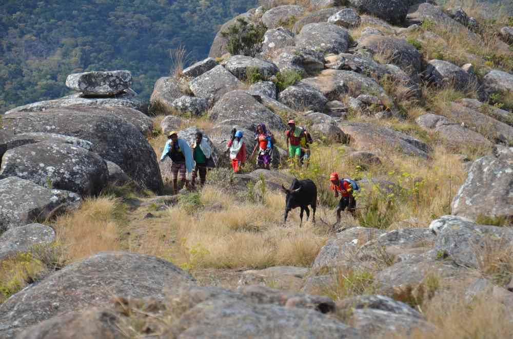
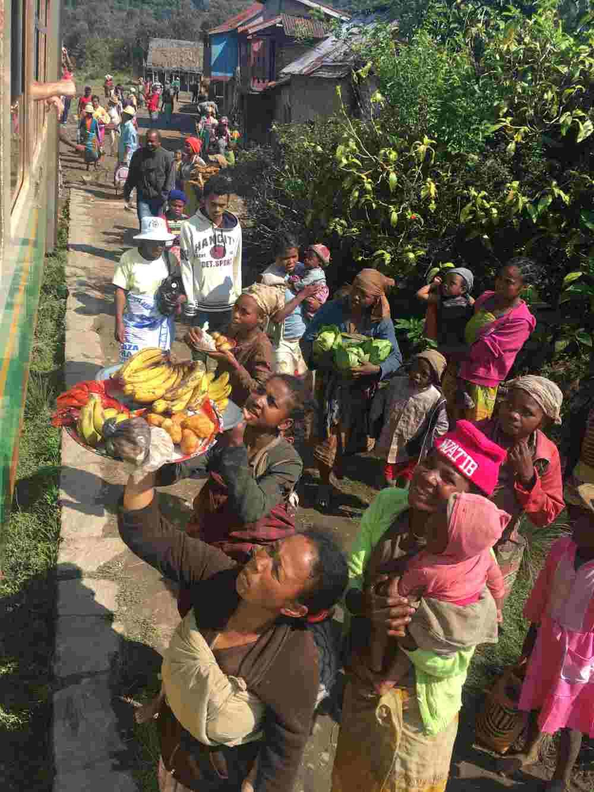
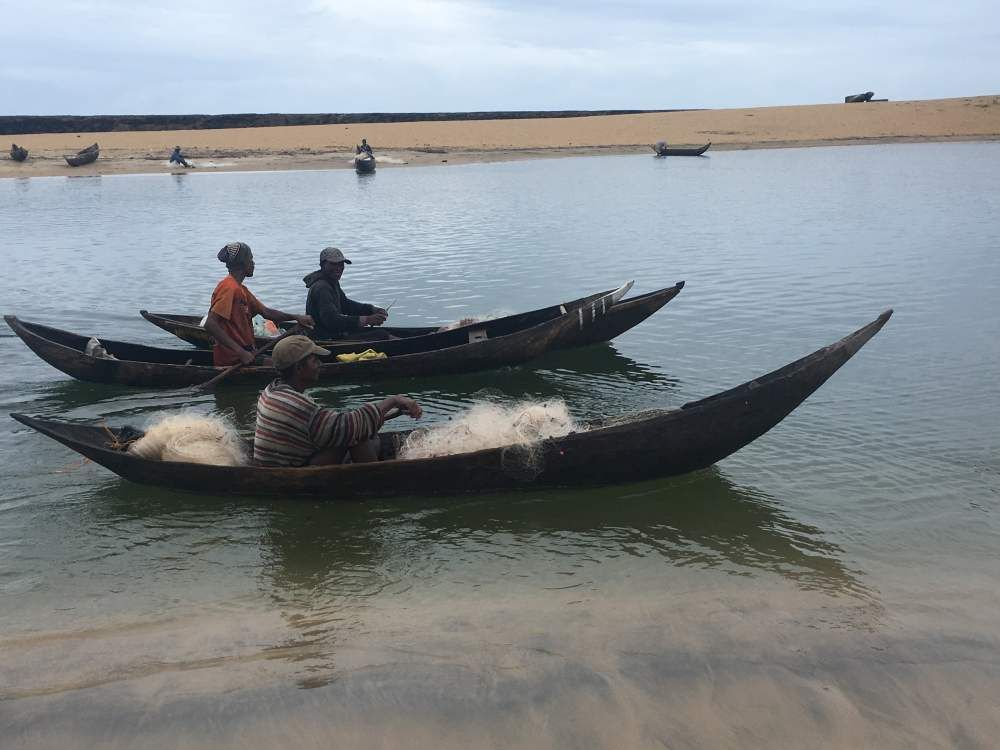
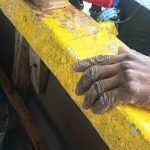
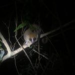
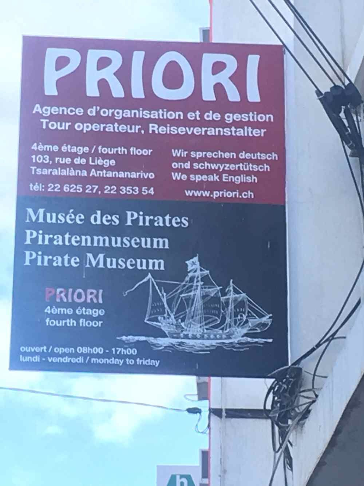

Ein Reisebericht zu einer im September/Oktober 2019 statt-gefundenen Reise mit PRIORI mit dem Titel: Unvergessliche Madagaskarreise
„Liebes PRIORI-Team in Basel und Tana
Was für eine unvergessliche Madagaskarreise…vielen Dank für eure Organisation. Eine Auswahl an Fotos zu treffen, fällt schwer 😉. Jedes Bild führt mir wieder die vielen Eindrücke vor Augen, die ich aufnehmen konnte.
Reiseetappe 1:
Erste Eindrücke der Hauptstadt Antananarivo bei schönem Wetter wurden gefolgt von den Feldern und roten Lateritböden. Den Backsteinhäusern und den vielen Menschen bei der Arbeit: Pflanzen, waschen, transportieren, bauen – (fast) alles in Handarbeit. Eindrücklich auch die Herstellung der Alutöpfe aus Recyclingmaterial (natürlich nicht SUVA-konform 😱) in Ambatolampy. Antsirabe, Ambositra und dann der Nationalpark von Ranomafana folgten. Erschreckend allerdings wie der Primärwald fast überall verschwunden ist; verständlich dabei, dass die Menschen ja irgendwie Energie zum kochen benötigen. Traurig auch, dass der Nationalpark auch immer wieder gefährdet ist durch illegalen Holzschlag. Hoffentlich gelingt es, auch durch die Wertschöpfung durch den Tourismus, diese Gebiete zu halten.

Von Ambalavao ging es dann über abenteuerliche Brücken und Pisten nach Namoly am Eingang des Andringitra Nationalparks. Wunderschöne Wanderung durch eindrückliche Landschaften und (auch hier) wieder hier mit sehr freundlichen, herzlichen Menschen, welche gerne mit uns lachten. Auch das Wetter spielte gut mit; die Farben der Landschaften und Felder leuchten natürlich bei Sonnenschein besonders schön.
Zurück in Fianarantsoa gings dann per Zug nach Manakara: eine ganz eindrückliche 10-stündige Zugreise in den alten Waggons der Yverdon-Ste. Croix Bahn. Auch hier wieder viele Eindrücke zu Landschaften und Menschen an den Stationen. Wir hatten offenbar eine Expressversion erwischt 🤗: um 17 Uhr waren wir schon in Manakara (Ankunft sonst manchmal erst spätabends).Reiseetappe 2:

In Manakara war der Tagesausflug auf dem Pangalanes-Kanal ein weiterer eindrücklicher „Themenwechsel“ mit eindrücklichen Wasserlandschaften. Zu Beginn der Besuch am Strand bei den vom Ozean zurückgekehrten Fischern. Einfachste Pirogen; ständig im Wasser, da dauernd etwas Wasser eindringt; kleine Beute.
Ein hartes und sehr einfaches Leben auch wieder hier: siehe zum Beispiel die Hand eines Fischers, der mit unserem Boot zu seinem Dorf mitfuhr.In Farafangana dann die mehrstündige Flussfahrt in einem Canote (mit einem chinesischen Traktormotor motorisiertes Grosskanu: wichtiges Transportmittel der am Fluss liegenden Siedlungen) nach Tangainony. Hier ein weiteres Highlight! Einblick in das Dorfleben einer ländlichen Gemeinschaft. Ein Mpanjac (Dorfkönig) führt diese an. Danach geht es weiter der Ostküste entlang Richtung Süden. Von den 10 Fähren sind mehrere defekt; damit verzögert sich die Reise, da jeweils ein Seil gespannt werden muss und dann die Fähre manuell !! (mehrere Tonnen schwer) über den Fluss gezogen wurde. Mora, mora also 😉. Zwischenhalt in Sandravinany, einem umwerfend schönen, total abgelegenen Ort mit Blick auf den Ozean. Der Hotelbesitzer, ursprünglich aus Marseille, der dort mit seiner madagassischen Frau lebt, ist ein sehr interessanter Gesprächspartner, der uns viel über sein interessantes Leben erzählt!
Danach geht weiter Richtung Süden auf der Route Nationale 12a, welche stellenweise mehr einem ackerähnlichen Graben gleicht. Dank der guten Fahrkünste von Liva geht es langsam aber sicher voran. Bei Evatra treffen wir wunderschöne einsame Strände am Indischen Ozean an, im Nahampoana Reservat (privater kleinerer Park) sehen wir am Tag viele, nicht scheue Lemuren.

Später in der Dunkelheit zeigt uns der freundliche Guide viele nachtaktive, ganz kleine Lemuren; gut erkennbar im Taschenlampenlicht durch die reflektierenden Augen.Nach einer Nacht in Tolagnaro (Fort Dauphin) eine lange Fahrt weiter Richtung Süden mit dem eindrücklichen plötzlichen Wechsel der Vegetation. Im Berentypark wieder spannende Exkursionen zu Flora und Fauna; die stachelbewehrten baumähnlichen Alaudien und Euphorbien sind schon sehr speziell. Speziell auch, dass sich die Lemuren ohne Probleme über diese Stacheln hinweg bewegen können. In dieser südlichen, trockenen und kargen Region sehen wir auch die grosse hier herrschende Armut. Liva erzählt uns, dass es Hungergebiete sind, welche die Menschen stark fordert. Es gibt einige Hilfsprogramme von der Regierung, internationalen Organisationen (FAO etc.) und vor allem von NGO’s.
Eindrücklich auch die riesigen Sisalplantagen, welche De Heaulmes gehören. Natürlich wurden dafür riesige Flächen des Dornenwaldes dafür vernichtet. Die Besitzer errichteten immerhin das Berenty Reservat😏.

Dann zurück nach Tolagnaro und vom kleinen Flugplatz aus nach Antananarivo, wo wir von unserem Fahrer/Guide des ersten Teils, Gaëtan abgeholt werden. Ein schönes Wiedersehen 🤗. Schön war auch, dass wir in Tana (Kurzform von Antananarivo) das Priori-Büro besuchen konnten und mit Bodo und Famasina sprechen konnten. Beim letzten Abendessen im Hotel vor dem Rückflug noch eine Überraschung: wir treffen Franz und Ellen an und können uns so noch etwas mit ihnen austauschen.Vielen Dank nochmals an PRIORI für die tolle, professionelle Organisation dieser unvergesslichen Reise, die ich nie mehr vergessen werde!“
Veloma, Roland